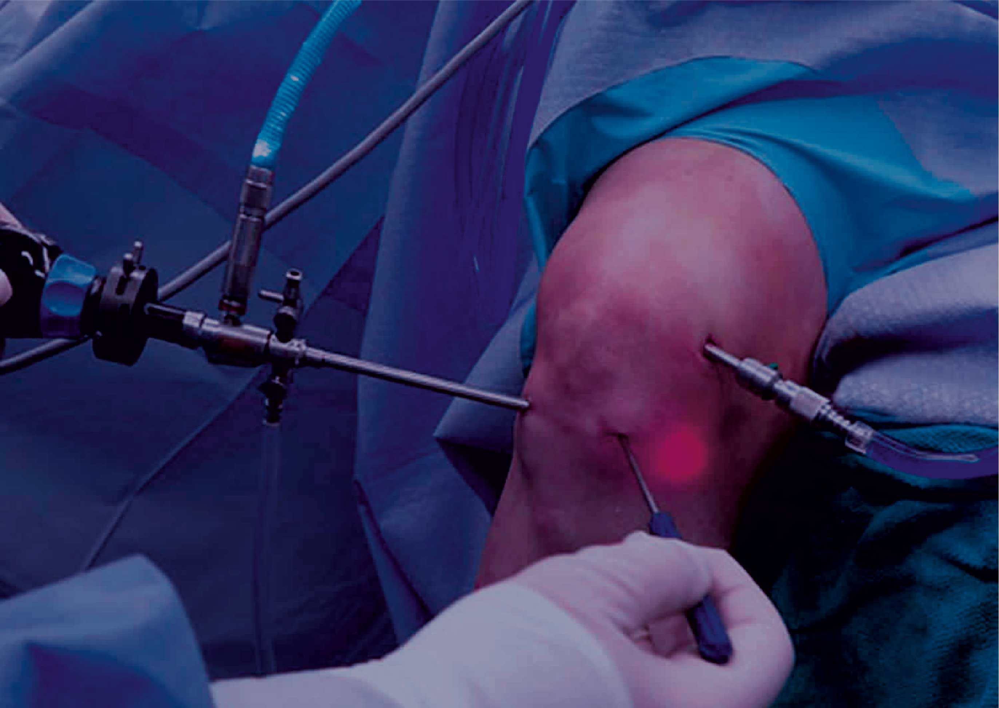
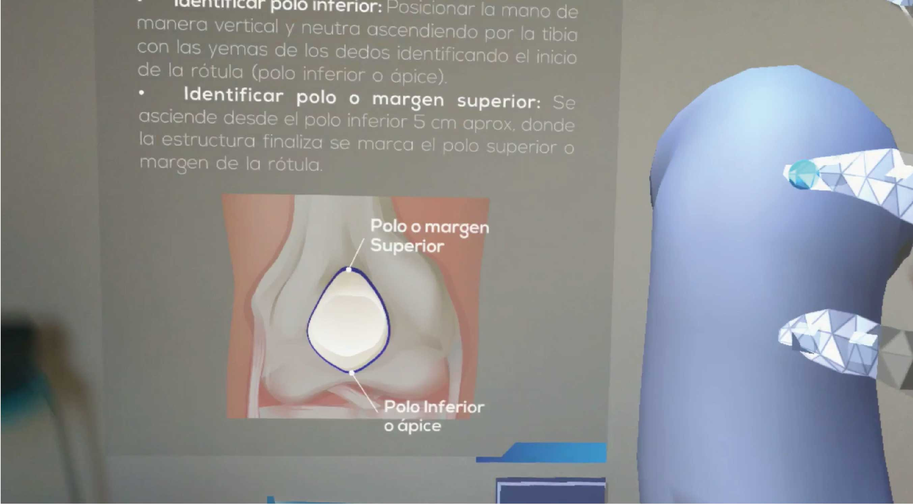
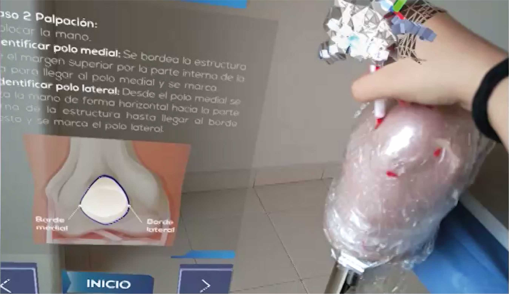
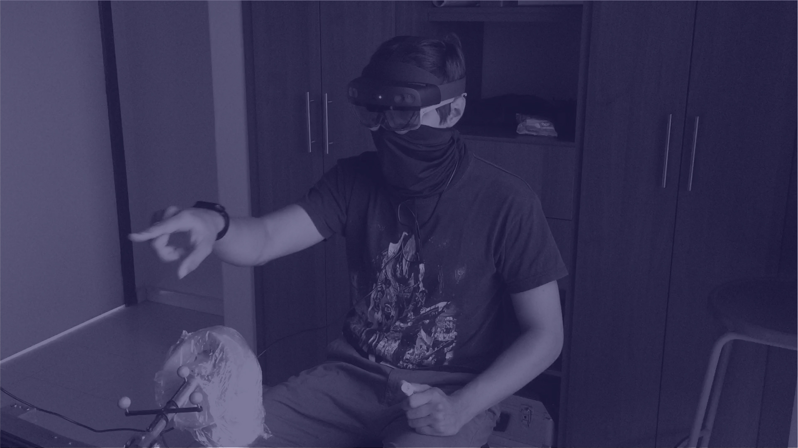
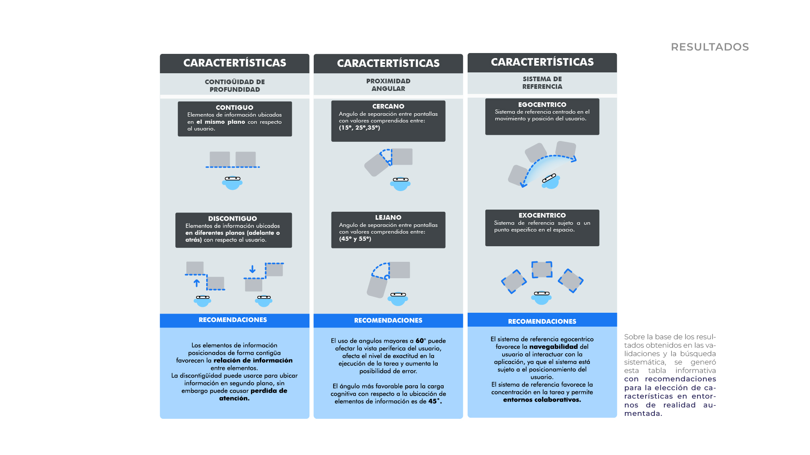
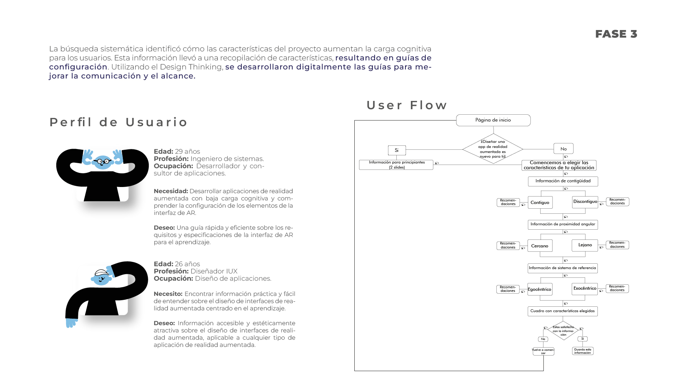

Less Load — Designing for the invisible.Less Load — Diseñar para lo invisible.
A research study that evaluated how UI configuration features — depth continuity, angular proximity and reference systems — affect cognitive load in augmented reality environments for medical training.Estudio de investigación que evaluó cómo las características de configuración de interfaces — continuidad de profundidad, proximidad angular y sistemas de referencia — afectan la carga cognitiva en entornos de realidad aumentada para formación médica.
YearAño
2021
RoleRol
Research · UX · AR InterfaceInvestigación · UX · Interfaz AR
CollaborationColaboración
Mayra A. Mantilla Pabón
DirectorsDirectores
L. Bautista · M. Maradei
Executive summaryResumen ejecutivo
Augmented reality is only as powerful as its interface — this study found the configuration rules that reduce cognitive overload.La realidad aumentada solo es tan poderosa como su interfaz — este estudio encontró las reglas de configuración que reducen la sobrecarga cognitiva.
AR interfaces in medical training must convey complex spatial information without overwhelming the user. Less Load investigated how three configurational features — depth contiguity, angular proximity, and reference system — affect the cognitive load of users interacting with AR environments designed to recognize anatomical structures.Las interfaces AR en formación médica deben transmitir información espacial compleja sin saturar al usuario. Less Load investigó cómo tres características de configuración — continuidad de profundidad, proximidad angular y sistema de referencia — afectan la carga cognitiva de usuarios que interactúan con entornos de RA para reconocer estructuras anatómicas.
The output was a digital configurational guide app — Less Load — that helps AR developers and UX designers choose the right interface parameters before building. The case study was applied to arthroscopic surgery training using the HoloLens device and eye-tracking via BeGaze software.El resultado fue una app de guía de configuración digital — Less Load — que ayuda a desarrolladores AR y diseñadores UX a elegir los parámetros correctos de interfaz antes de construir. El caso de estudio se aplicó al entrenamiento de cirugía artroscópica con HoloLens y eye-tracking mediante BeGaze.
3
Interface variables studied: depth, angle, reference systemVariables de interfaz estudiadas: profundidad, ángulo, sistema de referencia
45°
Optimal angular proximity for cognitive load — validated through eye trackingProximidad angular óptima para carga cognitiva — validada con eye tracking
50cm
Optimal depth distance for contiguous information elementsDistancia de profundidad óptima para elementos de información contiguos
What I didLo que hice
✓
Systematic literature review — ACM and LENS search engines, identifying AR interface attributes that affect cognitive loadRevisión sistemática de literatura — motores ACM y LENS, identificando atributos de interfaz AR que afectan la carga cognitiva
✓
Experimental protocol design — 2×2 factorial experiment with eye-tracking measurement (fixations, saccades, pupil diameter)Diseño de protocolo experimental — experimento factorial 2×2 con medición de eye-tracking (fijaciones, sacadas, diámetro pupilar)
✓
User testing with HoloLens — applied to arthroscopic surgery training using real and virtual knee modelsTesting con HoloLens — aplicado a entrenamiento de cirugía artroscópica con modelos reales y virtuales de rodilla
✓
Configurational guides compilation — translated research results into actionable design rules for AR interfacesCompilación de guías de configuración — resultados de investigación traducidos en reglas de diseño accionables para interfaces AR
✓
Less Load app design — UX flow and interactive prototype guiding developers through interface parameter selectionDiseño de app Less Load — flujo UX y prototipo interactivo que guía a desarrolladores en la selección de parámetros de interfaz
Augmented reality enhances the physical world by overlaying digital information from technological devices, positively impacting learning experiences. In medical training specifically, AR offers the ability to superimpose anatomical information onto physical models in real time — a powerful tool for teaching techniques like arthroscopic surgery that demand spatial precision.La realidad aumentada mejora el mundo físico superponiendo información digital de dispositivos tecnológicos, impactando positivamente las experiencias de aprendizaje. En formación médica específicamente, la RA ofrece la capacidad de superponer información anatómica sobre modelos físicos en tiempo real — una herramienta poderosa para enseñar técnicas como la cirugía artroscópica que exigen precisión espacial.
But AR interfaces can also overwhelm. External cognitive load — the load caused by poor interface design rather than the inherent complexity of the task — is a known problem in AR environments. This study set out to identify which configural features of an AR interface increase or reduce that load.Pero las interfaces AR también pueden saturar. La carga cognitiva externa — la carga causada por un mal diseño de interfaz más que por la complejidad inherente de la tarea — es un problema conocido en entornos AR. Este estudio buscó identificar qué características configurales de una interfaz AR aumentan o reducen esa carga.
Research questionPregunta de investigación
How do the configuration features of AR graphic interface elements — depth contiguity, angular proximity, and reference system — affect the management of external cognitive load?¿Cómo afectan las características de configuración de los elementos gráficos de interfaz AR — continuidad de profundidad, proximidad angular y sistema de referencia — a la gestión de la carga cognitiva externa?

Arthroscopic surgery — the study case for AR trainingCirugía artroscópica — el caso de estudio para entrenamiento AR
Phase 01 — Literature reviewFase 01 — Revisión de literatura
What the field knows.Lo que el campo sabe.
A systematic search across ACM and LENS engines identified the state of the art on AR interface configuration. Three variables emerged as most relevant to cognitive load management:Una búsqueda sistemática en motores ACM y LENS identificó el estado del arte sobre configuración de interfaces AR. Tres variables emergieron como más relevantes para la gestión de carga cognitiva:
01
Depth contiguity. Depth discontinuity caused cognitive overload in tasks involving multiple screens. Optimal distance: 50cm contiguous elements, 25cm for background information. Tests at 40, 50, and 60cm showed best performance at 50cm.Continuidad de profundidad. La discontinuidad de profundidad generó sobrecarga cognitiva en tareas con múltiples pantallas. Distancia óptima: elementos contiguos a 50cm, información de fondo a 25cm. Tests a 40, 50 y 60cm mostraron mejor rendimiento a 50cm.
02
Angular proximity. Angles greater than 60° affect peripheral vision and increase error rates. The most favorable angle for cognitive load is 45°. Analysis grouped angles into "near" (15°–35°) and "far" (45°–60°).Proximidad angular. Ángulos mayores a 60° afectan la visión periférica y aumentan la tasa de errores. El ángulo más favorable para la carga cognitiva es 45°. El análisis agrupó ángulos en "cercanos" (15°–35°) y "lejanos" (45°–60°).
03
Reference system. Egocentric (moves with the user) favors mobility and navigability. Exocentric (fixed in space) is preferred in collaborative environments, allowing all users to access shared information.Sistema de referencia. Egocéntrico (se mueve con el usuario) favorece la movilidad y navegabilidad. Exocéntrico (fijo en el espacio) es preferido en entornos colaborativos, permitiendo que todos los usuarios accedan a la información compartida.
The experiment used a 2×2 factorial design applied to arthroscopic surgery training — a discipline requiring high spatial precision and specific anatomical knowledge. The study case was recognizing superficial anatomical structures of the knee using HoloLens, with both a real physical model and a virtual 3D model.El experimento usó un diseño factorial 2×2 aplicado al entrenamiento de cirugía artroscópica — disciplina que requiere alta precisión espacial y conocimiento anatómico específico. El caso de estudio fue el reconocimiento de estructuras anatómicas superficiales de la rodilla con HoloLens, tanto con modelo físico real como virtual 3D.
A
Independent variablesVariables independientes
Angular proximity (27°–45°) and depth contiguity (25cm–50cm)Proximidad angular (27°–45°) y continuidad de profundidad (25cm–50cm)
B
Response variables — BeGazeVariables de respuesta — BeGaze
Fixations, saccades, and pupil diameter — all measured by eye-tracking softwareFijaciones, sacadas y diámetro pupilar — todos medidos por software de eye-tracking
C
Response variables — Post-testVariables de respuesta — Post-test
Knowledge transfer (correct answers) and mental load (Klepsh Scale)Transferencia de conocimiento (respuestas correctas) y carga mental (Escala Klepsh)
🦾
Systems engineer, 29Ingeniero de sistemas, 29
Primary user — AR developerUsuario primario — Desarrollador AR
Need: Develop low cognitive load AR apps and understand interface element configuration. Desire: A quick, efficient guide to AR interface requirements and specifications for learning.Necesidad: Desarrollar apps AR con baja carga cognitiva y entender la configuración de elementos de interfaz. Deseo: Una guía rápida y eficiente de requisitos y especificaciones de interfaz AR para aprendizaje.
🎨
UX/IUX designer, 26Diseñadora UX/IUX, 26
Secondary user — App designerUsuario secundario — Diseñadora de apps
Need: Find practical, easy-to-understand information on AR interface design focused on learning. Desire: Accessible, aesthetically pleasing information applicable to any type of AR application.Necesidad: Encontrar información práctica y comprensible sobre diseño de interfaces AR enfocado en aprendizaje. Deseo: Información accesible y estéticamente agradable, aplicable a cualquier tipo de aplicación AR.


AR interface in use — virtual knee model (left) and real physical model (right)Interfaz AR en uso — modelo virtual de rodilla (izq.) y modelo físico real (der.)

User interacting with the HoloLens during the experimentUsuario interactuando con el HoloLens durante el experimento
Phase 02 — ResultsFase 02 — Resultados
What the data showed.Lo que los datos mostraron.
Based on eye-tracking data and post-test results, the study yielded concrete configuration recommendations for each of the three variables analyzed:Basado en datos de eye-tracking y resultados post-test, el estudio generó recomendaciones de configuración concretas para cada una de las tres variables analizadas:
Depth contiguityContinuidad de profundidad
Contiguous at 50cmContiguo a 50cm
Contiguously positioned elements favor information relationships between elements. Discontinuity can be used for background information, but causes attention loss. 50cm showed optimal performance — less errors and better knowledge transfer.Los elementos posicionados contiguamente favorecen las relaciones de información entre elementos. La discontinuidad puede usarse para información de fondo, pero genera pérdida de atención. 50cm mostró rendimiento óptimo — menos errores y mejor transferencia de conocimiento.
Angular proximityProximidad angular
45° is optimal45° es óptimo
Angles greater than 60° affect peripheral vision, decrease task accuracy, and increase error rates. The most favorable angle for cognitive load management — balancing visibility and focus — is 45°.Ángulos mayores a 60° afectan la visión periférica, disminuyen la precisión de la tarea y aumentan la tasa de errores. El ángulo más favorable para la gestión de carga cognitiva — equilibrando visibilidad y enfoque — es 45°.
Reference systemSistema de referencia
Egocentric for mobilityEgocéntrico para movilidad
The egocentric system favors user navigability since the system is subject to user positioning — critical for mobile learning tasks. Exocentric is recommended for collaborative environments where shared access to information is the priority.El sistema egocéntrico favorece la navegabilidad del usuario ya que el sistema está sujeto al posicionamiento del usuario — crítico para tareas de aprendizaje móviles. Exocéntrico se recomienda para entornos colaborativos donde el acceso compartido a la información es la prioridad.
Key insight: The study demonstrated that external cognitive load in AR isn't just about content complexity — it's a direct function of where you place elements, at what angle, and whether the interface moves with the user or stays fixed in space.Insight clave: El estudio demostró que la carga cognitiva externa en AR no es solo sobre la complejidad del contenido — es una función directa de dónde colocas los elementos, a qué ángulo, y si la interfaz se mueve con el usuario o permanece fija en el espacio.

Configuration features table — recommendations for AR interface designTabla de características de configuración — recomendaciones para diseño de interfaces AR
Phase 03 — OutputFase 03 — Resultado
The Less Load app.La app Less Load.
The systematic search and experimental results were translated into a digital configurational guide — an app that takes any AR developer or designer through a decision tree to select the right interface parameters for their specific use case.La búsqueda sistemática y los resultados experimentales se tradujeron en una guía de configuración digital — una app que lleva a cualquier desarrollador o diseñador AR por un árbol de decisiones para seleccionar los parámetros de interfaz correctos para su caso de uso específico.
The app goes beyond information delivery — it generates a personalized configuration frame the user can save, designed with UX thinking to adapt to both novice and expert users through a branching onboarding flow.La app va más allá de la entrega de información — genera un marco de configuración personalizado que el usuario puede guardar, diseñado con pensamiento UX para adaptarse tanto a usuarios novatos como expertos a través de un flujo de onboarding ramificado.
User flowFlujo de usuario
1
Home page. Entry point — "Is designing an augmented reality app new to you?" branches to beginner info or direct feature selection.Página de inicio. Punto de entrada — "¿Diseñar interfaces es algo nuevo para ti?" ramifica hacia información para principiantes o selección directa de características.
2
Contiguity selection. User chooses contiguous or discontiguous depth placement, with recommendations shown at each branch.Selección de contigüidad. El usuario elige colocación de profundidad contigua o discontigua, con recomendaciones mostradas en cada rama.
3
Angular proximity. User selects near (15°–35°) or far (45°–60°) angle range based on their use case.Proximidad angular. El usuario selecciona rango de ángulo cercano (15°–35°) o lejano (45°–60°) según su caso de uso.
4
Reference system. Egocentric or exocentric selection based on whether the environment is individual or collaborative.Sistema de referencia. Selección egocéntrica o exocéntrica basada en si el entorno es individual o colaborativo.
✓
Configuration frame. A personalized summary of selected parameters — downloadable for direct use in development.Marco de configuración. Resumen personalizado de parámetros seleccionados — descargable para uso directo en desarrollo.

User flow diagram and app in contextDiagrama de flujo de usuario y app en contexto